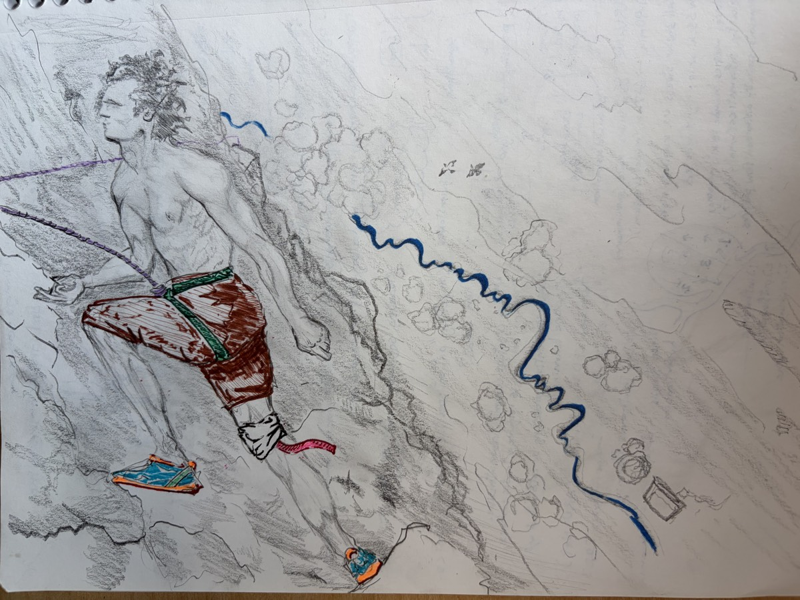

Cybernetica // v3
240 XP
E
⟐ 6 day streak
∴
Quests
Tree
Signal
← back
Strength
Physical conditioning
4/7 days active · 1/2 today
7-day volume · 4 sessions · 42 sets
9
back
8
chest
7
quads
5
shoulders
5
hamstrings
4
biceps
4
triceps
Workout
+30 XP
HIGH
logged ·
Push — 14 sets · via Strong
Active recovery
+15 XP
LOW
Log it
Not today
Night
Paper